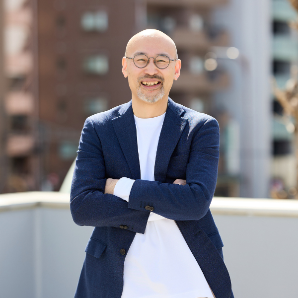

こうした相談を受けたとき、就業規則の整備や制度面のアドバイスはできても、「この職場で、いま何が起きているのか」までは踏み込めず、もどかしさを感じたことはないでしょうか。
手続きや制度対応だけでは、顧問先の本当の悩みに応えきれない。そんな実感を持つ社労士の方は、決して少なくありません。
離職もメンタル不調も、
ある日突然始まるわけではありません。
その手前には、必ず「組織の状態」が
表れています。
退職届が出る前には、「相談しない」「発言しない」「抱え込む」という行動があります。その行動の背景には、「自分はここに必要とされていない」という存在感の低下や、「相談したら否定されるのではないか」という人間関係に起因する不安感が潜んでいることが少なくありません。
制度対応だけでは見えにくい職場の状態を、どう捉えるのか。社労士として、顧問先の組織改善支援にどう関わっていけるのか。90分で、その視点をお持ち帰りいただけます。
離職・メンタル不調・職場不和に共通する、「個人の問題」に見えて実は組織の問題、という構造を整理します。
結果・行動・思考・感情のつながりから、社員の行動の背景を読み解く基本フレームをお伝えします。
実際のケースを題材に、「表面の問題」の奥にある組織状態を見立てるプロセスを体験していただきます。
経営者の感覚では「問題ない」職場でも、データには何が表れるのか。サンプルを見ながら解説します。
組織改善支援の全体像と、社労士としての関わり方をご紹介します。より実践的に学べる1Dayセミナーのご案内も予定しています。
※内容は一部変更になる場合があります。
2002年、28歳の時に社会保険労務士事務所を開業。2005年に『なぜ、就業規則を変えると会社は儲かるのか？』（大和出版）を出版し、世の中の就業規則のあり方を大きく変える。2021年には『新標準の就業規則 多様化に対応した《戦略的》社内ルールのつくり方』(日本実業出版社)を出版。戦略的な就業規則づくりを通じて1,000社超の経営課題に関わり、「社労士に頼られる社労士」として専門家への指導も行う。
また、2005年に原田メソッドを学び、以後、自ら実践するとともに、多くの経営者・士業の方に原田メソッドを伝えている。
社会保険労務士としては、労働法務・心理学・東洋哲学をベースとして、コーチング・ファシリテーションのテクニックを駆使しながら、「人の心を温める組織づくり」に活動領域を広げている。組織に「働きがい」と「安心感」をもたらすことをモットーに、時には人事・労務管理のアドバイザーとして、時には研修講師として、時にはコンサルタントとして関わり、多くの実績をあげている。
| セミナー名 | 社労士のための組織状態見立て入門セミナー 〜離職・メンタル不調・職場不和を、存在感と不安感から読み解く90分〜 |
|---|---|
| 開催日時 | 2026年7月2日(木) 9:30 〜 11:00 |
| 申込締切 | 2026年7月1日(水) 23:59 |
| 開催形式 | Zoom ウェビナー ※お申込み後、参加用URLをメールでお送りいたします |
| アーカイブ配信 | あり ※お申し込みいただいた方全員に、後日、ご登録のメールアドレス宛に配信URLをお送りいたします。当日のご参加が難しい方も、ぜひお申し込みください。 |
| 定員 | 100名 |
| 対象 |
・開業社会保険労務士の方 ・社会保険労務士法人社員の方 ・社会保険労務士事務所の職員の方 ・1年以内に社会保険労務士事務所開業予定の方 ※社会保険労務士有資格者の方に限られます |
| 講師 | 代表理事 下田 直人 |
| 主催 | 一般社団法人 自立した人と組織を育成する協会 東京都豊島区上池袋2-2-15 HIRAKU 01 IKEBUKURO Social Design Library 2階 |
| 参加費 | 無料 |
その答えにつながる「見立ての視点」を、
90分でお持ち帰りいただきます。
参加費は無料。当日ご参加できない方にも
アーカイブ配信をお送りします。
申込締切：2026年7月1日(水) 23:59
無料で申し込む 所要1分。お名前・メールアドレスなど簡単な項目のみです。